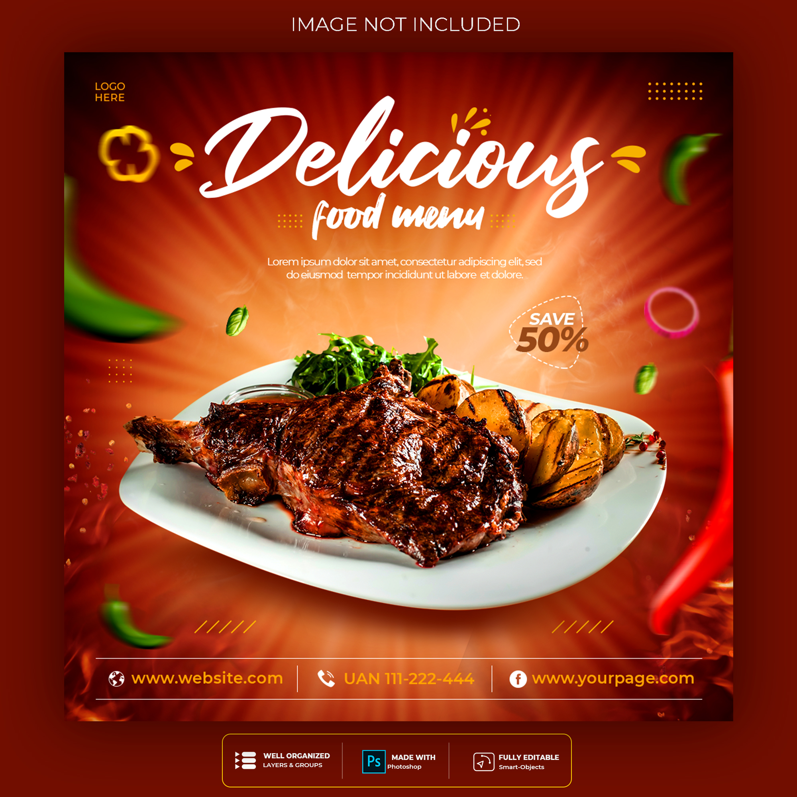
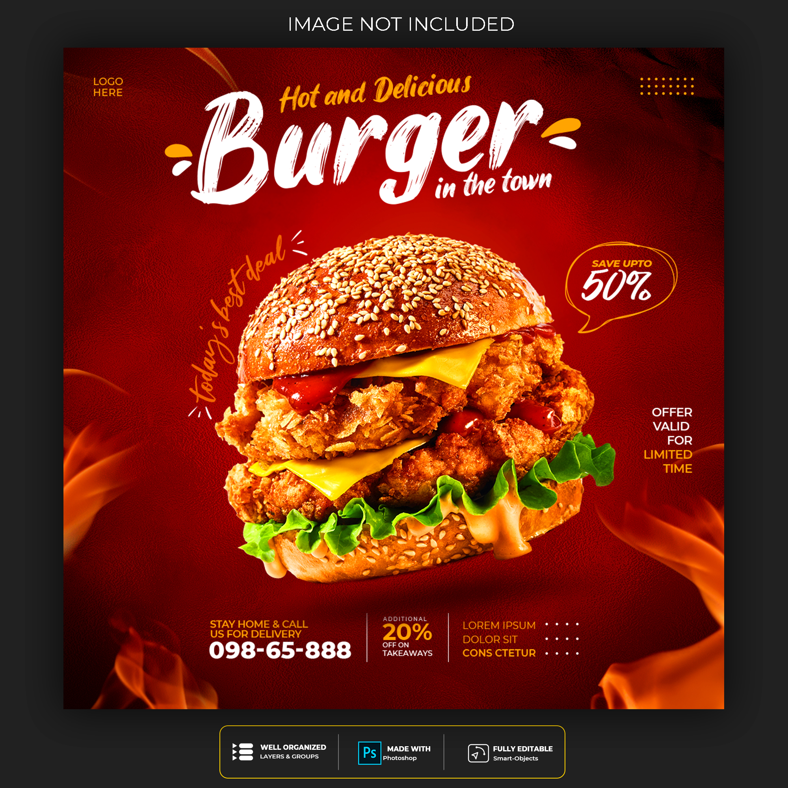
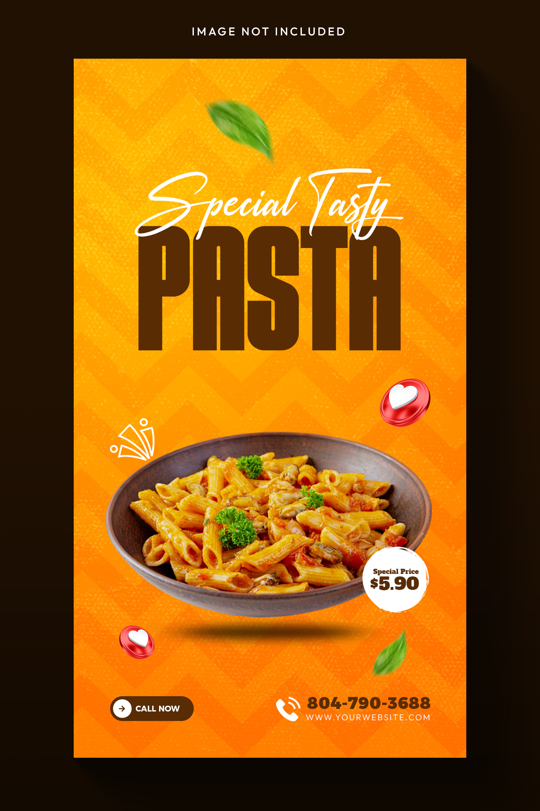

SWAYAM
RESTAURANT
Swayam Restaurant, located at Bypass, Bairiya in Daltonganj, is a wonderful and welcoming place to enjoy delicious food with family and friends. Because of its convenient location near the bypass road, it is easy to reach for both local residents and travelers passing through the city. The restaurant offers a clean, peaceful, and family-friendly environment where guests can relax and have a comfortable dining experience. Their menu has a great variety of tasty dishes, including fresh Indian meals, spicy starters, hot rotis, rich curries, flavorful biryani, and popular fast food items—all prepared with fresh ingredients and authentic spices. Along with great taste, Swayam Restaurant is known for its polite staff, quick service, and pocket-friendly prices, making it a favorite spot in Bairiya, Daltonganj for everyday lunches, weekend dinners, and small celebrations.



Bypass Road Bairiya
Daltonganj 822101
Palamu Jharkhand